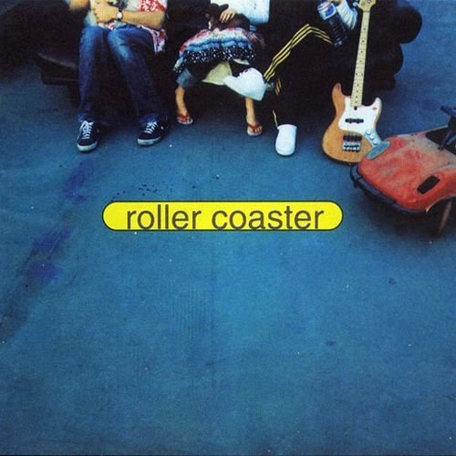
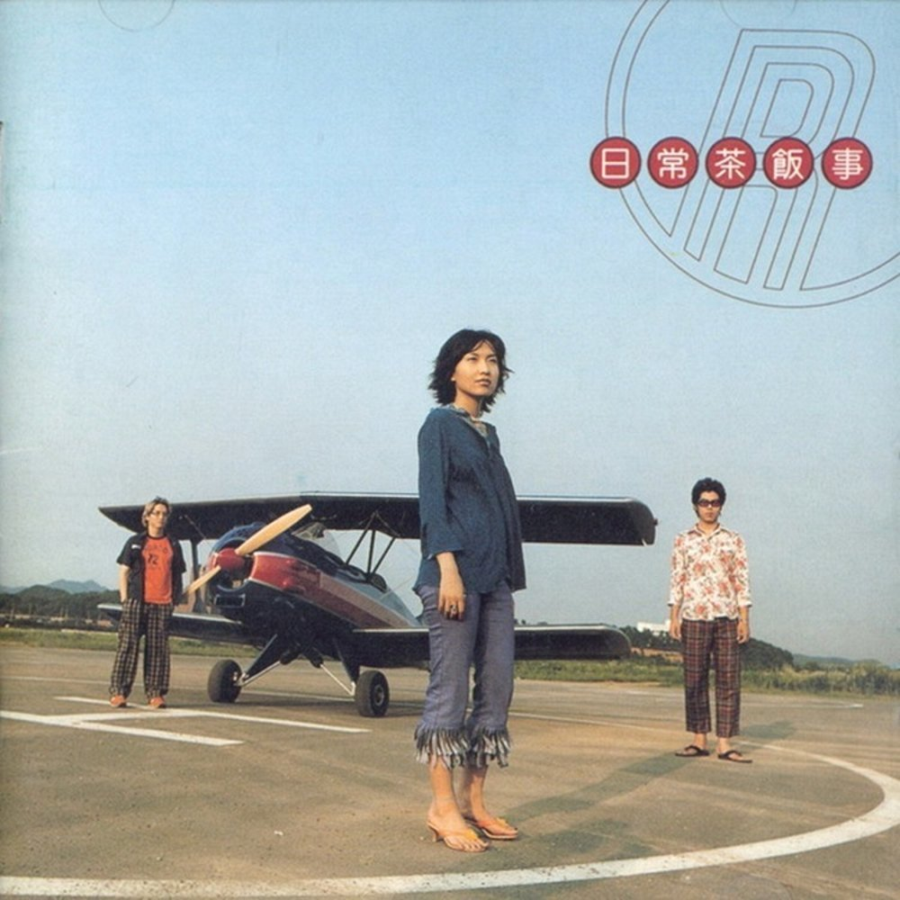
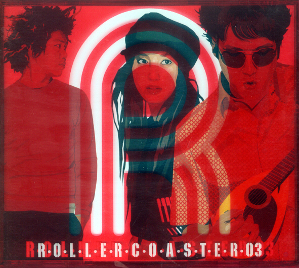
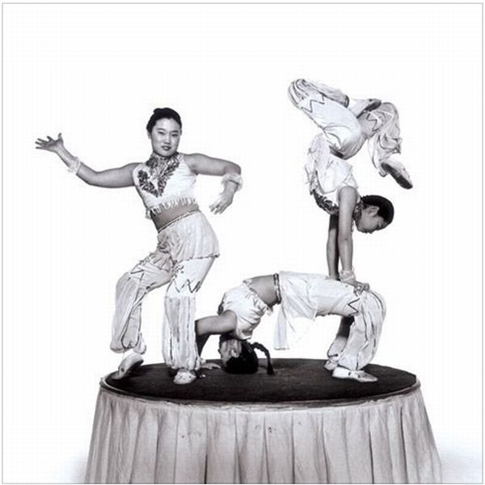
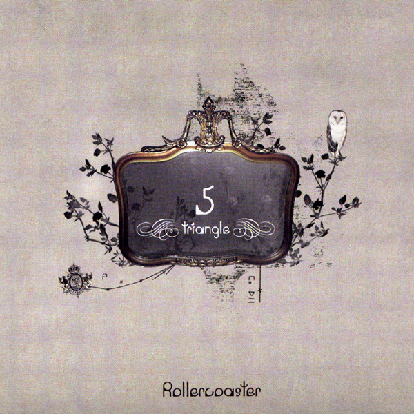

안녕하세요, 라보엠입니다.
지난주 2025년 국내 인디 음악 포스팅에서 소개한 '음성녹음'을 계속해서 듣고 있습니다. 이 밴드의 음악에서는 예전에 좋아했던 '롤러코스터', '검정치마', 브로콜리 너마저' 들의 음악적 색이 엿보이는데요, 오랜만에 롤러코스터가 생각나 오늘은 한국 인디 음악계에서 오랫동안 사랑받아온 밴드 '롤러코스터'를 소개해드겠습니다.
놓치면 안될 2025 국내 인디 음악 5곡 추천
안녕하세요 한스입니다.2025년, 스트리밍 시대에도 인디음악은 그 어느 해보다 깊고 풍부하게 다가오고 있습니다. 감성의 결이 살아있는 신작들, 독창적인 아티스트의 성장, 우리 삶의 순간을 채
umm.la-bohe.me
도시적이고 세련된 분위기, 깊은 감정선을 담아낸 그들의 음악은 시간에 따라 변하고 또 자신의 색을 지켜온 여정을 보여줍니다. 멤버는 조원선(보컬/키보드), 이상순(기타), 지누(베이스/프로그래밍)로 구성되어 있습니다.
롤러코스터는 90년대 말, 대중가요의 흐름과는 별개의 모던 록, 애시드 재즈, 일렉트로니카 등 장르적 실험을 펼치며 등장합니다. 홈 레코딩 방식으로 직접 만든 첫 음반은 세련된 사운드와 직설적인 감성으로 평론가와 대중 모두에게 큰 주목을 받았습니다. 멤버들 각자의 개성이 묻어난 프로그래밍, 그루브, 감성적 보컬은 롤러코스터만의 고유한 시티팝적 정서를 완성해갑니다.
롤러코스터 앨범 리스트
이제 1집부터 5집까지, 롤러코스터의 정규 앨범과 타이틀곡에 대해 하나씩 살펴보겠습니다.
1집 《Roller Coaster》(1999) - 내게로 와 / 습관
1999년 발매된 데뷔 앨범 《Roller Coaster》는 감각적인 도시 분위기와 따스한 어쿠스틱 사운드가 특징입니다. 타이틀곡 〈내게로 와〉는 부드러운 멜로디와 담백한 가사가 인상적이죠. 많은 팬들이 사랑했던 〈습관 (Bye Bye)〉 역시 앨범 대표곡으로 자리잡았으며, 오늘날까지 라디오에서 회자되는 스탠다드송입니다. 삶의 외로움, 사랑의 흔적들을 섬세하게 담아, 롤러코스터만의 색을 알린 작품이었습니다.

2집 《일상다반사》(2000) - 힘을 내요, 미스터김
2집 《일상다반사》는 전작의 감성을 이어받으면서도 한층 더 팝적이고 밝은 분위기를 덧입혔습니다. 대표곡 〈힘을 내요, 미스터 김〉은 일상에 지친 이들에게 응원을 보내는 노래로 오랜 시간 한국의 ‘힘내송’으로 회자되었습니다. 또 다른 타이틀 〈Love Virus〉는 밝은 멜로디와 재치 있는 가사로 많은 인기를 끌었습니다. 이 앨범은 한국 대중음악 100대 명반에 오를 정도로 예술적 완성도를 인정받았습니다.

3집 《Absolute》(2002) - Last Scene
3집 《Absolute》에서는 기존 애시드 재즈에서 벗어나 일렉트로니카 사운드를 본격적으로 도입합니다. 앨범 타이틀곡 〈Last Scene〉은 몽환적인 분위기와 절제된 감정을 담아내며, 한층 세련된 롤러코스터의 모습을 보여줍니다. 사운드의 색감과 시도가 돋보여, 이전 작품들과는 또 다른 인상을 남겼습니다. 얼마전 발매된 아이유의 리메이크 앨범 꽃갈피 셋에서도 이 곡이 리메이크 되었습니다.

아이유 - Last Scene (Feat. Wonstein) (Last Scene (Feat. 원슈타인))
4집 《Sunsick》(2004) - 무지개
4집 《Sunsick》은 따스함과 쓸쓸함이 동시에 느껴지는 앨범입니다. 타이틀곡 〈무지개〉는 희망적인 메시지와 조원선 특유의 부드러운 목소리가 잘 어우러져, 삶의 반복 속에서 마주치는 작은 기적 같은 순간들을 노래합니다. 전작의 일렉트로니카와 어쿠스틱 사운드가 균형 있게 혼합되어, 더욱 원숙해진 롤러코스터의 음악 세계를 선사했습니다.

5집 《Triangle》(2006) - 숨길 수 없어요
5집 《Triangle》은 밴드의 음악적 여정을 집대성하는 앨범입니다. 〈숨길 수 없어요〉라는 타이틀곡은 담담한 사운드 위에 인간미와 소박함을 담아, 누구나 공감할 수 있는 일상적 감정에 초점을 맞췄습니다. 기타와 신디, 베이스가 유기적으로 어우러져, 롤러코스터의 세련됨과 따뜻함을 모두 포착하고 있습니다. ‘트라이앵글’이라는 이름처럼 균형과 조화, 다양한 장르가 집약된 작품입니다.

맺음말
롤러코스터 밴드 매력은 ‘과감한 변화’와 ‘일상의 위로’에 있습니다. 도시의 손길, 내리쬐는 햇살, 비가 내리는 오후처럼 때로는 쓸쓸하고 때로는 명랑한, 감정의 풍경을 섬세하게 포착합니다. 각 앨범마다 방향성은 달라지지만, 결국엔 인간의 애틋함과 따뜻한 시선을 잃지 않습니다. 그래서 롤러코스터를 듣는 순간, 누구나 삶에서 위로받고, 새로운 하루를 살아갈 힘을 얻곤 합니다.
오늘 하루, 롤러코스터의 1집부터 5집까지의 타이틀을 차례대로 듣는 여유를 가져보면 어떨까요? 익숙함과 신선함 사이, 세 멤버가 빚어내는 음악적 여정 속에서 우리의 감정도 깊어지리라 믿습니다. 음악이 전하는 담백한 위로와, 세련된 사운드 속에 살아 숨쉬는 롤러코스터의 이야기를 다시 한 번 귀 기울여 보시길 바랍니다.